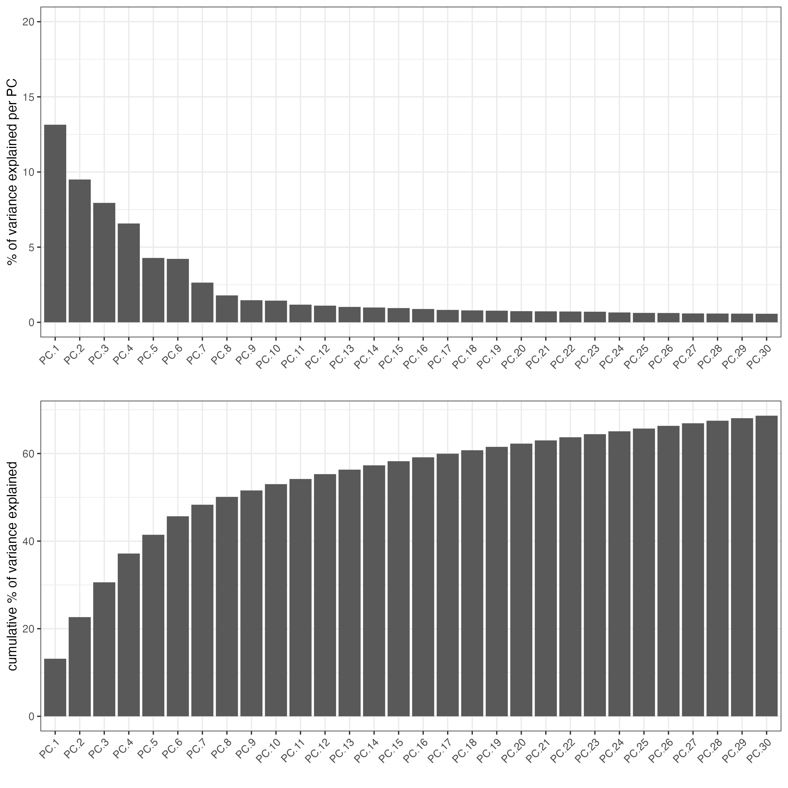
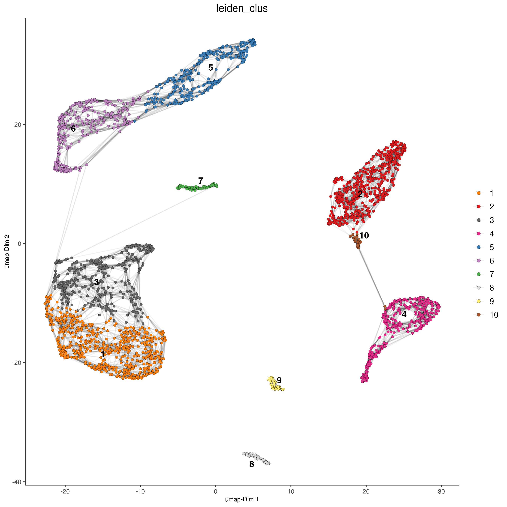
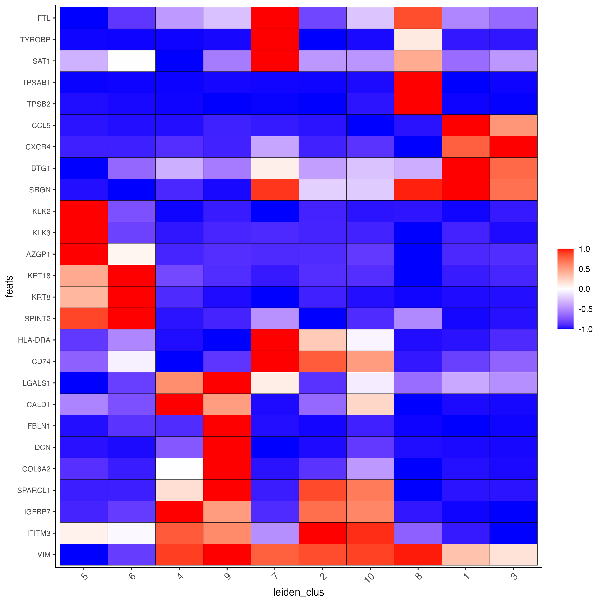
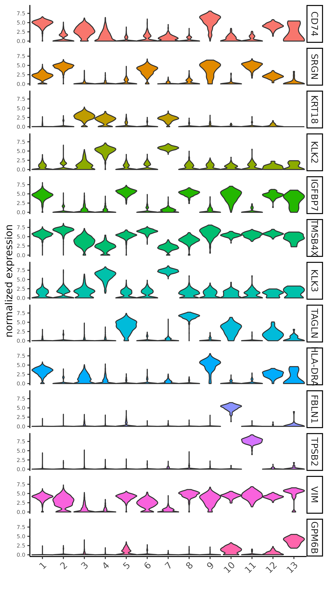
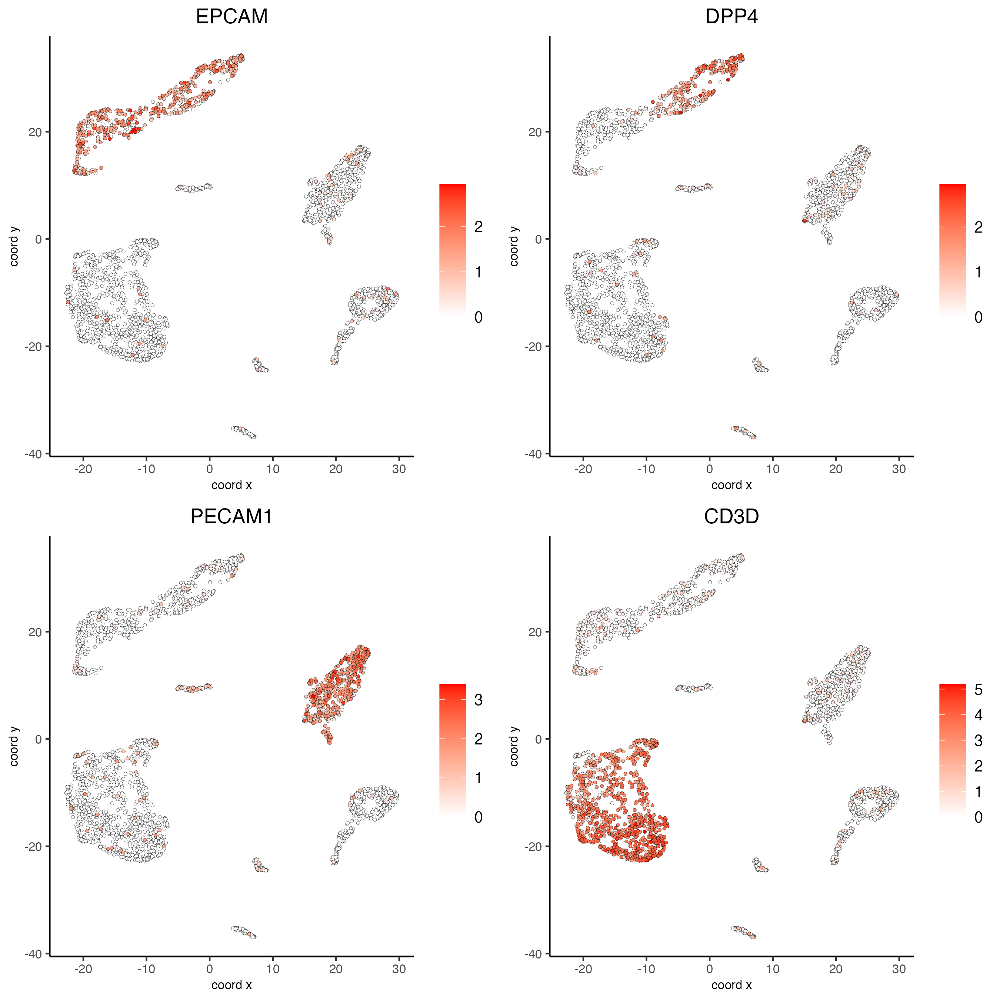
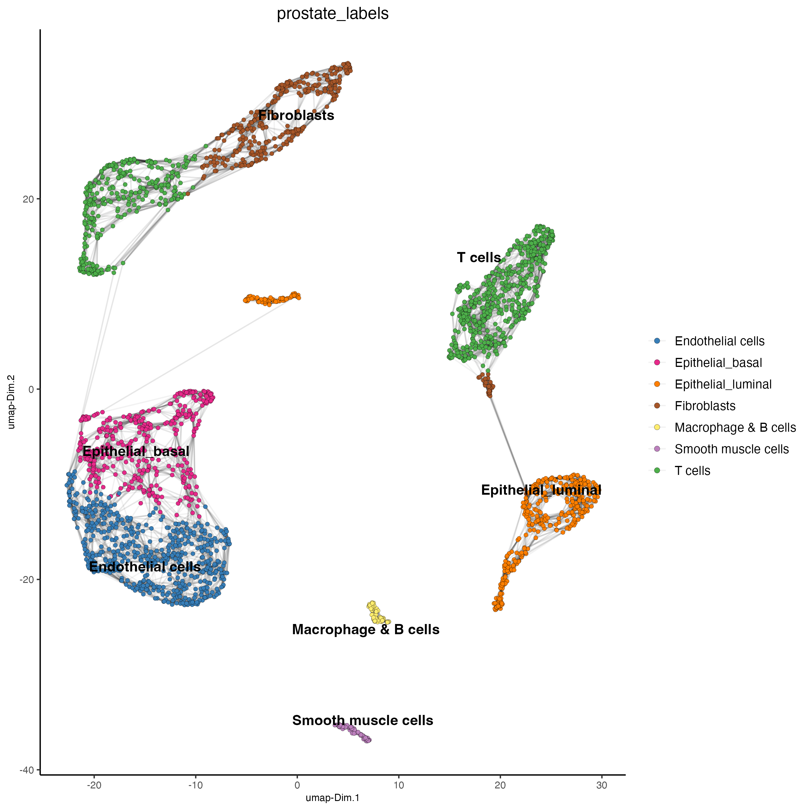
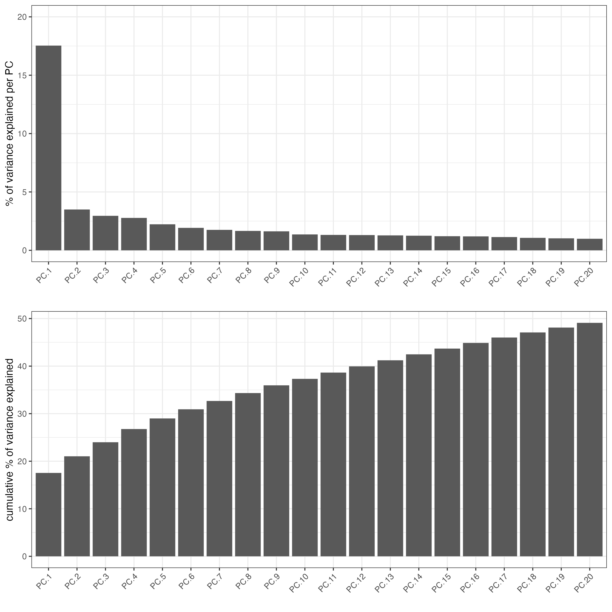
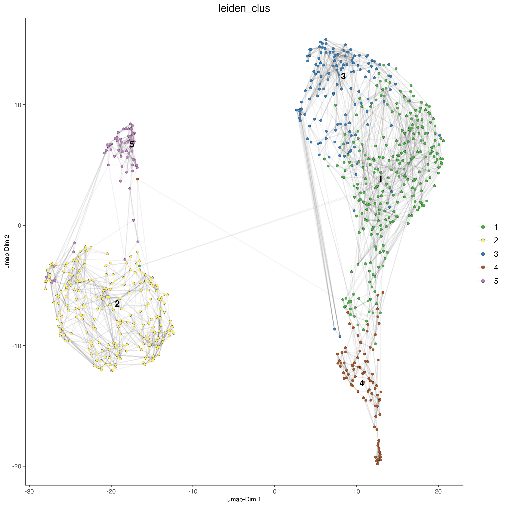
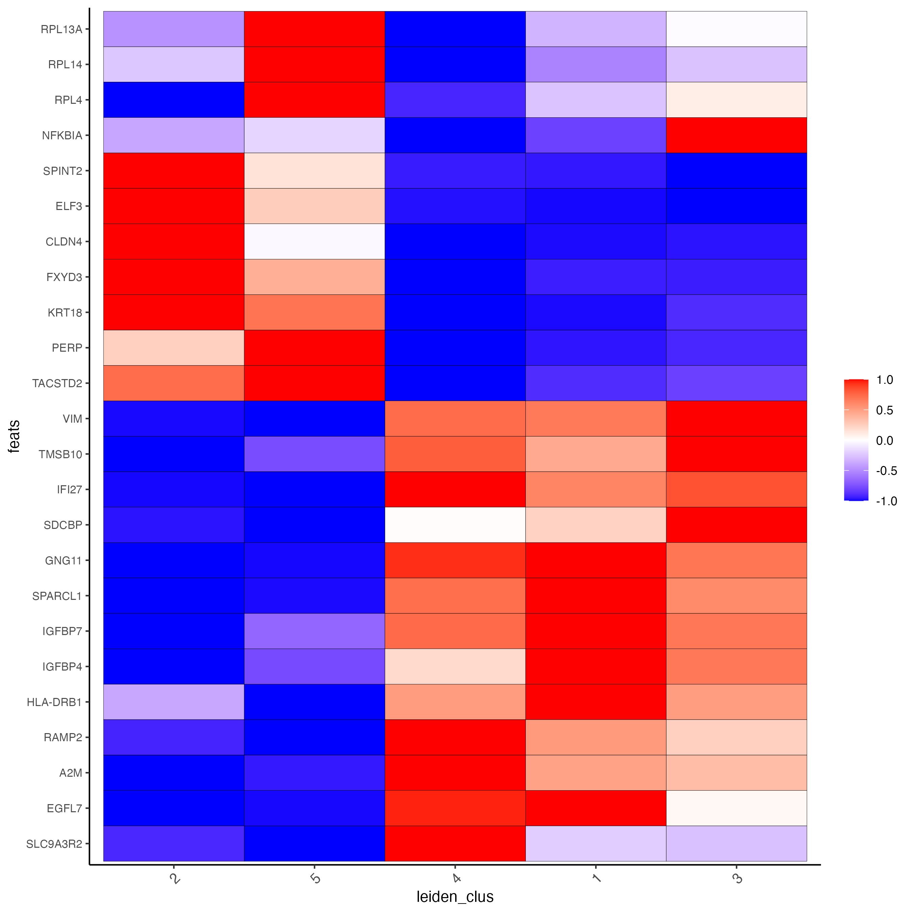
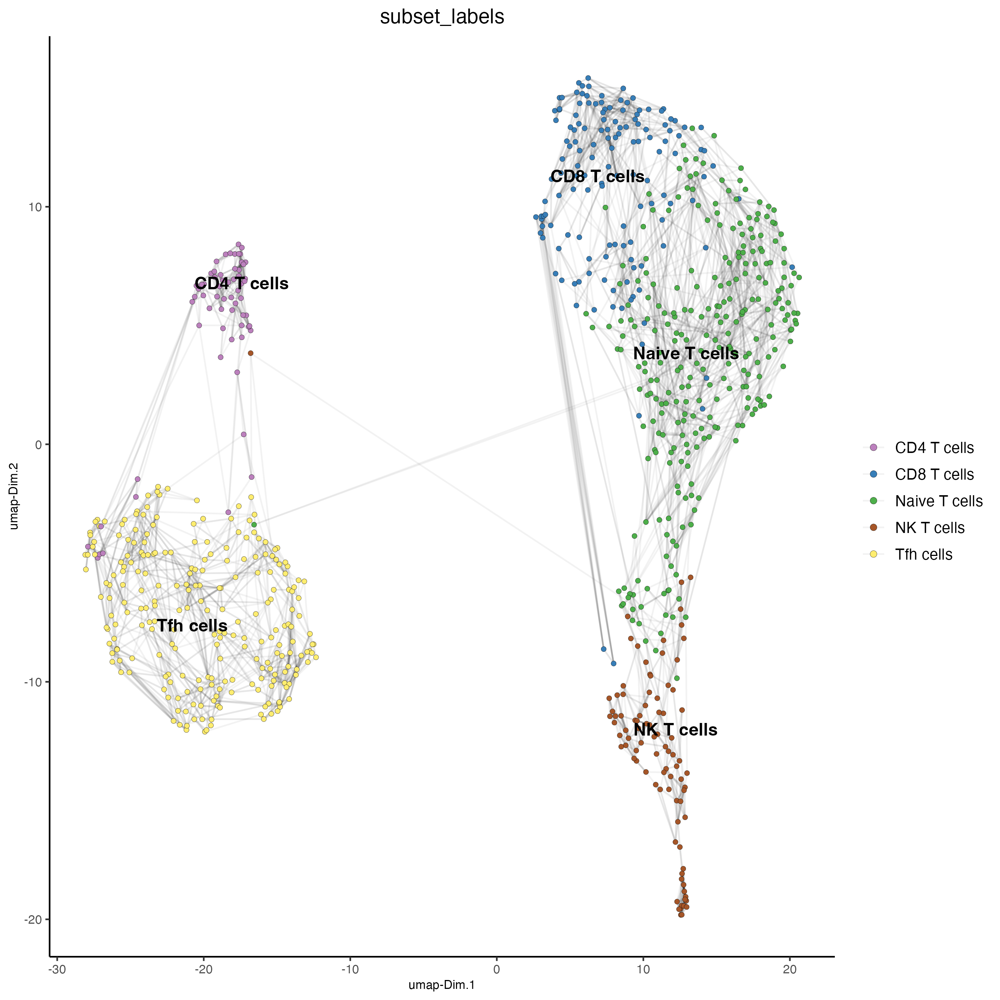

vignettes/singlecell_prostate_standard.Rmd
singlecell_prostate_standard.RmdMa et al. Processed 10X Single Cell RNAseq from two prostate cancer patients. The raw dataset can be found here. To run this tutorial we will use the sample 1.
# Ensure Giotto Suite is installed.
if(!"Giotto" %in% installed.packages()) {
pak::pkg_install("drieslab/Giotto")
}
# Ensure the Python environment for Giotto has been installed.
genv_exists <- Giotto::checkGiottoEnvironment()
if(!genv_exists){
# The following command need only be run once to install the Giotto environment.
Giotto::installGiottoEnvironment()
}
library(Giotto)
# 1. set working directory
results_folder <- "/path/to/results/"
# Optional: Specify a path to a Python executable within a conda or miniconda
# environment. If set to NULL (default), the Python executable within the previously
# installed Giotto environment will be used.
python_path <- NULL # alternatively, "/local/python/path/python" if desired.
# 3. create giotto instructions
instructions <- createGiottoInstructions(save_dir = results_folder,
save_plot = TRUE,
show_plot = FALSE,
python_path = python_path)Note that you will need an input directory for barcodes.tsv(.gz) features.tsv(.gz) matrix.mtx(.gz)
data_path <- "/path/to/data/"
expression <- read.table(paste0(data_path, "GSM4773521_PCa1_gene_counts_matrix.txt"))
giotto_SC <- createGiottoObject(expression = expression,
instructions = instructions)
giotto_SC <- filterGiotto(gobject = giotto_SC,
expression_threshold = 1,
feat_det_in_min_cells = 50,
min_det_feats_per_cell = 500,
expression_values = "raw",
verbose = TRUE)
## normalize
giotto_SC <- normalizeGiotto(gobject = giotto_SC,
scalefactor = 6000)
## add mitochondria gene percentage and filter giotto object by percent mito
library(rtracklayer)
## run wget http://ftp.ensembl.org/pub/release-105/gtf/homo_sapiens/Homo_sapiens.GRCh38.105.gtf.gz
gtf <- import("Homo_sapiens.GRCh38.105.gtf.gz")
gtf <- gtf[gtf$gene_name!="" & !is.na(gtf$gene_name)]
mito <- gtf$gene_name[as.character(seqnames(gtf)) %in% "MT"]
mito <- unique(mito)
giotto_SC <- addFeatsPerc(giotto_SC,
feats = mito,
vector_name = "perc_mito")
giotto_SC <- subsetGiotto(giotto_SC,
cell_ids = pDataDT(giotto_SC)[which(pDataDT(giotto_SC)$perc_mito < 15),]$cell_ID)
## add gene & cell statistics
giotto_SC <- addStatistics(gobject = giotto_SC,
expression_values = "raw")
## PCA ##
giotto_SC <- calculateHVF(gobject = giotto_SC)
giotto_SC <- runPCA(gobject = giotto_SC,
center = TRUE,
scale_unit = TRUE)
screePlot(giotto_SC,
ncp = 30,
save_param = list(save_name = "3_scree_plot"))
## cluster and run UMAP ##
# sNN network (default)
showGiottoDimRed(giotto_SC)
giotto_SC <- createNearestNetwork(gobject = giotto_SC,
dim_reduction_to_use = "pca",
dim_reduction_name = "pca",
dimensions_to_use = 1:10,
k = 15)
# UMAP
giotto_SC <- runUMAP(giotto_SC,
dimensions_to_use = 1:10)
# Leiden clustering
giotto_SC <- doLeidenCluster(gobject = giotto_SC,
resolution = 0.2,
n_iterations = 1000)
plotUMAP(gobject = giotto_SC,
cell_color = "leiden_clus",
show_NN_network = TRUE,
point_size = 1.5,
save_param = list(save_name = "4_Cluster"))
markers_scran <- findMarkers_one_vs_all(gobject = giotto_SC,
method = "scran",
expression_values = "normalized",
cluster_column = "leiden_clus",
min_feats = 3)
topgenes_scran <- unique(markers_scran[, head(.SD, 3), by = "cluster"][["feats"]])
plotMetaDataHeatmap(giotto_SC,
expression_values = "normalized",
metadata_cols = "leiden_clus",
selected_feats = topgenes_scran,
y_text_size = 8,
show_values = "zscores_rescaled",
save_param = list(save_name = "5_a_metaheatmap"))
topgenes_scran <- markers_scran[, head(.SD, 1), by = "cluster"]$feats
# violinplot
violinPlot(giotto_SC,
feats = unique(topgenes_scran),
cluster_column = "leiden_clus",
strip_text = 10,
strip_position = "right",
save_param = list(save_name = "5_b_violinplot_scran", base_width = 5))
# Plot known marker genes across different cell types. EPCAM for epithelial cells,
# DPP4(CD26) for Epithelial luminal cells, PECAM1(CD31) for Endothelial cells and CD3D for T cells
dimFeatPlot2D(giotto_SC,
feats = c("EPCAM","DPP4","PECAM1","CD3D"),
cow_n_col = 2,
save_param = list(save_name = "6_featureplot"))
prostate_labels <- c("Endothelial cells",#1
"T cells",#2
"Epithelial_basal",#3
"Epithelial_luminal",#4
"Fibroblasts",#5
"T cells",#6
"Epithelial_luminal",#7
"Smooth muscle cells",#8
"Macrophage & B cells",#9
"Fibroblasts",#10
"Mast cells",#11
"Mesenchymal cells",#12
"Neural Progenitor cells")#13
names(prostate_labels) <- 1:13
giotto_SC <- annotateGiotto(gobject = giotto_SC,
annotation_vector = prostate_labels,
cluster_column = "leiden_clus",
name = "prostate_labels")
dimPlot2D(gobject = giotto_SC,
dim_reduction_name = "umap",
cell_color = "prostate_labels",
show_NN_network = TRUE,
point_size = 1.5,
save_param = list(save_name = "7_Annotation"))
Subset_giotto_T <- subsetGiotto(giotto_SC,
cell_ids = pDataDT(giotto_SC)[which(pDataDT(giotto_SC)$prostate_labels == "T cells"),]$cell_ID)
## PCA
Subset_giotto_T <- calculateHVF(gobject = Subset_giotto_T)
Subset_giotto_T <- runPCA(gobject = Subset_giotto_T,
center = TRUE,
scale_unit = TRUE)
screePlot(Subset_giotto_T,
ncp = 20,
save_param = list(save_name = "8a_scree_plot"))
Subset_giotto_T <- createNearestNetwork(gobject = Subset_giotto_T,
dim_reduction_to_use = "pca",
dim_reduction_name = "pca",
dimensions_to_use = 1:20,
k = 10)
# UMAP
Subset_giotto_T <- runUMAP(Subset_giotto_T,
dimensions_to_use = 1:8)
# Leiden clustering
Subset_giotto_T <- doLeidenCluster(gobject = Subset_giotto_T,
resolution = 0.1,
n_iterations = 1000)
plotUMAP(gobject = Subset_giotto_T,
cell_color = "leiden_clus",
show_NN_network = TRUE,
point_size = 1.5,
save_param = list(save_name = "8b_Cluster"))
markers_scran_T = findMarkers_one_vs_all(gobject=Subset_giotto_T,
method = "scran",
expression_values = "normalized",
cluster_column = "leiden_clus",
min_feats = 3)
topgenes_scran_T <- unique(markers_scran_T[, head(.SD, 5), by = "cluster"][["feats"]])
plotMetaDataHeatmap(Subset_giotto_T,
expression_values = "normalized",
metadata_cols = "leiden_clus",
selected_feats = topgenes_scran_T,
y_text_size = 8,
show_values = "zscores_rescaled",
save_param = list(save_name = "8_c_metaheatmap"))
T_labels <- c("Naive T cells",#1
"Tfh cells",#2
"CD8 T cells",#3
"NK T cells",#4
"CD4 T cells")#5
names(T_labels) <- 1:5
Subset_giotto_T <- annotateGiotto(gobject = Subset_giotto_T,
annotation_vector = T_labels,
cluster_column = "leiden_clus",
name = "subset_labels")
dimPlot2D(gobject = Subset_giotto_T,
dim_reduction_name = "umap",
cell_color = "subset_labels",
show_NN_network = TRUE,
point_size = 1.5,
save_param = list(save_name = "8d_Annotation"))
R version 4.3.2 (2023-10-31)
Platform: aarch64-apple-darwin20 (64-bit)
Running under: macOS Sonoma 14.2.1
Matrix products: default
BLAS: /System/Library/Frameworks/Accelerate.framework/Versions/A/Frameworks/vecLib.framework/Versions/A/libBLAS.dylib
LAPACK: /Library/Frameworks/R.framework/Versions/4.3-arm64/Resources/lib/libRlapack.dylib; LAPACK version 3.11.0
locale:
[1] en_US.UTF-8/en_US.UTF-8/en_US.UTF-8/C/en_US.UTF-8/en_US.UTF-8
time zone: America/New_York
tzcode source: internal
attached base packages:
[1] stats4 stats graphics grDevices utils datasets methods base
other attached packages:
[1] rtracklayer_1.62.0 GenomicRanges_1.54.1 GenomeInfoDb_1.38.6 IRanges_2.36.0
[5] S4Vectors_0.40.2 BiocGenerics_0.48.1 Giotto_4.0.3 GiottoClass_0.1.3
loaded via a namespace (and not attached):
[1] colorRamp2_0.1.0 bitops_1.0-7 rlang_1.1.3
[4] magrittr_2.0.3 GiottoUtils_0.1.5 matrixStats_1.2.0
[7] compiler_4.3.2 DelayedMatrixStats_1.24.0 png_0.1-8
[10] systemfonts_1.0.5 vctrs_0.6.5 pkgconfig_2.0.3
[13] SpatialExperiment_1.12.0 crayon_1.5.2 fastmap_1.1.1
[16] backports_1.4.1 magick_2.8.3 XVector_0.42.0
[19] scuttle_1.12.0 labeling_0.4.3 utf8_1.2.4
[22] Rsamtools_2.18.0 rmarkdown_2.25 ragg_1.2.7
[25] bluster_1.12.0 xfun_0.42 zlibbioc_1.48.0
[28] beachmat_2.18.1 jsonlite_1.8.8 DelayedArray_0.28.0
[31] BiocParallel_1.36.0 terra_1.7-71 cluster_2.1.6
[34] irlba_2.3.5.1 parallel_4.3.2 R6_2.5.1
[37] RColorBrewer_1.1-3 limma_3.58.1 reticulate_1.35.0
[40] parallelly_1.37.0 Rcpp_1.0.12 SummarizedExperiment_1.32.0
[43] knitr_1.45 future.apply_1.11.1 FNN_1.1.4
[46] Matrix_1.6-5 igraph_2.0.2 tidyselect_1.2.0
[49] rstudioapi_0.15.0 abind_1.4-5 yaml_2.3.8
[52] codetools_0.2-19 listenv_0.9.1 lattice_0.22-5
[55] tibble_3.2.1 Biobase_2.62.0 withr_3.0.0
[58] evaluate_0.23 future_1.33.1 Biostrings_2.70.2
[61] pillar_1.9.0 MatrixGenerics_1.14.0 checkmate_2.3.1
[64] generics_0.1.3 dbscan_1.1-12 RCurl_1.98-1.14
[67] ggplot2_3.4.4 sparseMatrixStats_1.14.0 munsell_0.5.0
[70] scales_1.3.0 gtools_3.9.5 globals_0.16.2
[73] glue_1.7.0 metapod_1.10.1 tools_4.3.2
[76] GiottoVisuals_0.1.4 BiocIO_1.12.0 BiocNeighbors_1.20.2
[79] data.table_1.15.0 ScaledMatrix_1.10.0 locfit_1.5-9.8
[82] GenomicAlignments_1.38.2 scran_1.30.2 XML_3.99-0.16.1
[85] cowplot_1.1.3 grid_4.3.2 edgeR_4.0.15
[88] colorspace_2.1-0 SingleCellExperiment_1.24.0 GenomeInfoDbData_1.2.11
[91] BiocSingular_1.18.0 restfulr_0.0.15 cli_3.6.2
[94] rsvd_1.0.5 textshaping_0.3.7 fansi_1.0.6
[97] S4Arrays_1.2.0 dplyr_1.1.4 uwot_0.1.16
[100] gtable_0.3.4 digest_0.6.34 progressr_0.14.0
[103] dqrng_0.3.2 SparseArray_1.2.4 ggrepel_0.9.5
[106] rjson_0.2.21 farver_2.1.1 htmltools_0.5.7
[109] lifecycle_1.0.4 statmod_1.5.0